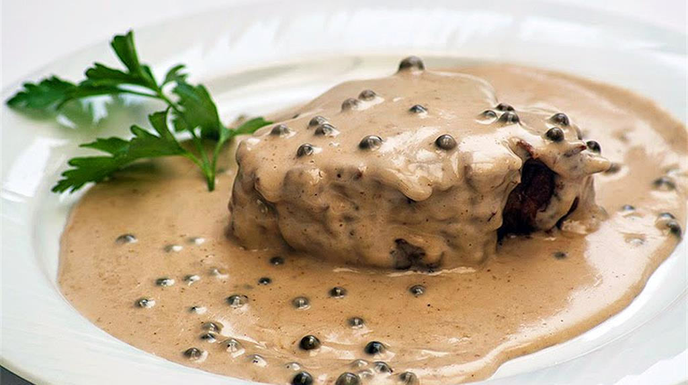

Green pepper steak
-

-
A steak which is prepared for those who have a good taste.
If you wish you were in heaven, you don't have to anymore.
Ingredients
- 1 Kg of beef steak
- 80 g of liquid fresh cream
- 100 g of beef broth
- 20 g of clarified butter
- 00 Flour
- Salt
- 20 g of green pepper
- 40 g of mustard
- 25 g of brandy
How to prepare the dish
-
Prepare the beef broth, by diluting beef cubes
into
hot boiling water.
-
Take the steak and flour the top and the bottom surfaces.
The sides have to remain clean.
-
Liquefy the clarified butter in a pan.
When hot, put the steak above the butter.
-
When cooked enough, simmer with brandy until reduced.
The brandy will probably catch fire,
it is part of the process.
Be careful while handling
the pan:
You don't want to spill out the burning alcohol,
again. For the third time in a row. In the same cooking session.
-
Now that the flame is out, hopefully,
add the green pepper pieces in the pan and, also,
the salt and the mustard.
-
Cook everything for a more few minutes. Then, add
50 g of liquid fresh cream and 50 g of beef broth.
Mix things with a spoon and, then, put the liquid on top
of the steak.
Turn off the flame and:
Enjoy ;-)
Go back to the homepage